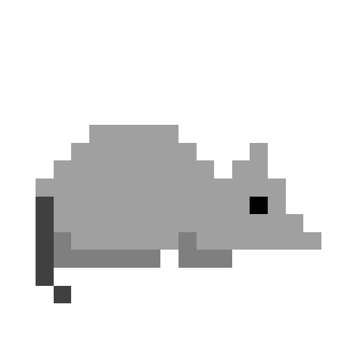
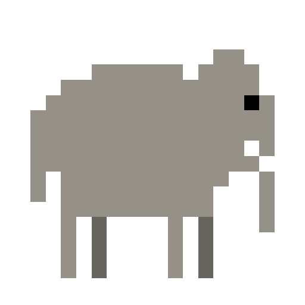
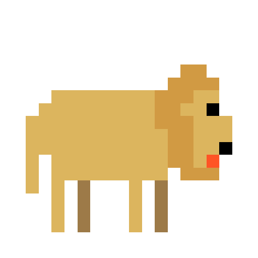

The domestic dog (Canis lupus familiaris when considered a subspecies of the wolf or Canis familiaris when considered a distinct species) is a member of the genus Canis (canines), which forms part of the wolf-like canids, and is the most widely abundant terrestrial carnivore.
The dog and the extant gray wolf are sister taxa as modern wolves are not closely related to the wolves that were first domesticated, which implies that the direct ancestor of the dog is extinct.
The dog was the first species to be domesticated and has been selectively bred over millennia for various behaviors, sensory capabilities, and physical attributes.

Rats
Rats are various medium-sized, long-tailed rodents. Species of rats are found throughout the order Rodentia, but stereotypical rats are found in the genus Rattus. Other rat genera include Neotoma (pack rats), Bandicota (bandicoot rats) and Dipodomys (kangaroo rats).
Rats are typically distinguished from mice by their size. Generally, when someone discovers a large muroid rodent, its common name includes the term rat, while if it is smaller, its name includes the term mouse.
The common terms rat and mouse are not taxonomically specific. In other words, rat is not a scientific term; if it were, all rats would belong to the genus Rattus.

Elephants
The elephants are the large mammals forming the family Elephantidae in the order Proboscidea. Three species are currently recognised: the African bush elephant (Loxodonta africana), the African forest elephant (L. cyclotis), and the Asian elephant (Elephas maximus).
All elephants have several distinctive features, the most notable of which is a long trunk (also called a proboscis), used for many purposes, particularly breathing, lifting water, and grasping objects. Their incisors grow into tusks, which can serve as weapons and as tools for moving objects and digging. Elephants' large ear flaps help to control their body temperature. Their pillar-like legs can carry their great weight.

Lions
The lion (Panthera leo) is a species in the family Felidae; it is a muscular, deep-chested cat with a short, rounded head, a reduced neck and round ears, and a hairy tuft at the end of its tail. The lion is sexually dimorphic; males are larger than females with a typical weight range of 150 to 250 kg (330 to 550 lb) for males and 120 to 182 kg (265 to 400 lb) for females.
Male lions have a prominent mane, which is the most recognisable feature of the species. A lion pride consists of a few adult males, related females and cubs. Groups of female lions typically hunt together, preying mostly on large ungulates. The species is an apex and keystone predator, although they scavenge when opportunities occur. Some lions have been known to hunt humans, although the species typically does not.